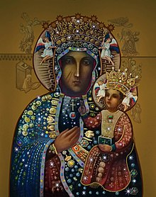
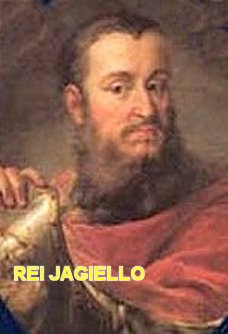
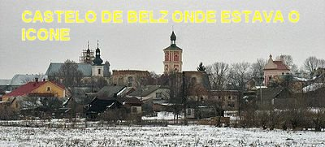
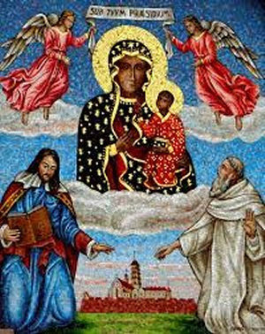
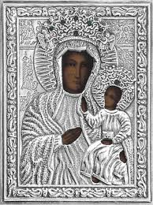

“A PINTURA DA VIRGEM”
Nas encostas suaves de Jasna Gòra, a
"Montanha Luminosa” ou também denominada de “Monte Claro", que circunda a
cidade de Czestochowa
(pronúncia=chestokova) na Polônia, encontra-se o famoso Santuário
de NOSSA SENHORA DE CZESTOCHOWA
, que está localizado numa colina de pedras
brancas na parte oeste da cidade. Os polacos estão habituados a ligar este Santuário
aos numerosos acontecimentos da vida: desde aqueles felizes e também aos tristes;
decisões solenes, como por exemplo: a escolha do rumo da vida, a vocação
religiosa ou o casamento, o nascimento dos filhos, os exames de maturidade, e
enfim, todos os outros momentos. Assim os poloneses se acostumaram a levar os
seus problemas à montanha de Jasna Gòra (Monte Claro) e diante da Imagem
Milagrosa, confiá-los à VIRGEM SANTÍSSIMA, solicitando DELA a inspiração e a
intercessão necessária junto ao SEU DIVINO FILHO JESUS, para orientação,
solução, ou aconselhamento de cada caso. Pode-se dizer que esta imagem é o
coração do Sagrado Santuário que possui uma admirável e poderosa força
misteriosa e profunda, demonstrada ao longo dos anos atraindo multidões de
peregrinos de todos os países, que vem a Polônia em busca de proteção, luz e
consolo para as dificuldades da existência.
A pintura da MADONA DE CZESTOCHOWA
tem uma história muito interessante. Na verdade, a tradição diz que a pintura foi
feita por São Lucas diretamente sobre uma mesa de cedro que era utilizada pela
Sagrada Família. O evangelista teria feito a pintura em Jerusalém com o objetivo
de guardar para a eternidade a beleza incomparável de MARIA, NOSSA SENHORA. Por
outro lado, uma lenda afirma que estando Jerusalém ocupada pelo exército romano,
Santa Helena, mãe do Imperador Constantino, quis visitar os lugares santos e
procurar o lenho da Santa Cruz de JESUS. Nesta oportunidade ela também viu o
quadro com a imagem da VIRGEM MARIA e ficou apaixonada por ele. Com muita
devoção conseguiu adquiri-lo, recebendo-o das mulheres que o guardavam. Juntou a
sua alegria a satisfação maior de também ter encontrado um belo fragmento do
lenho da Santa Cruz de NOSSO SENHOR JESUS CRISTO. Assim, feliz com o agradável
desfecho de seus objetivos, preparou uma reforçada embalagem e contratou
transporte para ambas as preciosidades, enviando-as para o seu filho Constantino
o Grande, Imperador de Constantinopla, que naquela época era a metrópole da
Igreja Católica no Oriente.
CHEGADA A CZESTOCHOWA
Constantino era um recém convertido
ao cristianismo, e por isso mesmo, com imensa alegria recebeu o Ícone de NOSSA SENHORA
e o fragmento da verdadeira Cruz de JESUS, enviados por sua mãe, colocando-os no Altar
da capela particular de seu palácio, posicionando o Ícone da VIRGEM MARIA no Altar
principal e o fragmento da Cruz de JESUS, ao lado, fechado numa hermética caixa de
vidro. As noticias correram ligeiras e muitas pessoas queriam visitá-las. Carinhosamente
o Imperador mandou fazer diversas cópias do Ícone, que foram distribuídas para as
Igrejas de Constantinopla e Istambul, e algumas cópias foram doadas aos seus
amigos, cristãos fervorosos do oriente e do ocidente. Todavia o quadro original
permaneceu na Capela até o seu falecimento. Estima-se que por mais de 400 anos
as cópias do quadro permaneceu nas capelas particulares de príncipes russos. O
Ícone Original foi transferido para a Capela do Castelo em Belz (Beltz), também
na Rússia, onde permaneceu por muitos anos.

Estando a Rússia (do
Imperador Casemiro, o Grande) em guerra contra Ladislaw Jagiello, rei da Hungria
e da Polônia, a disputa foi vencida por Ladislaw. Então, a cidade de Belz (Beltz)
e o famoso Castelo Imperial, caíram nas mãos de Ladislaw, que nomeou o seu sobrinho
Wladiyslaw Opolczyk, Príncipe de Opole (Polônia), como governador de Belz (Beltz).
De acordo com fontes ucranianas, há
documentos antigos de Jasna Góra (Monte Claro), que afirmam com crédito, os acontecimentos
históricos que vamos descrever. Depois da guerra travada por Casimiro, o Grande,
e também, quando a cidade foi incorporada ao Reino polonês, o Ícone da VIRGEM
MARIA foi transportado com muita cerimônia e honras pelo Rei Leão I da Galiza,
de Constantinopla para a cidade de Belz (Beltz), e permaneceu escondida no
Castelo de Belz (Beltz), e desse modo, entrou automaticamente na posse do
Príncipe de Opole, Wladiyslaw Opolczyk, Conselheiro de Luís I da Hungria Ladislaw
Jagiello, Rei da Polônia e da Lituânia.
Depois de meses no Castelo, onde
a paz reinava em todas as regiões, surgiu uma abominável situação de invasão por
tropas inimigas. E a grave situação anunciou a possibilidade de um perigoso ataque,
que logo se efetivou com uma dura e encarniçada batalha contra as tropas tártaras
e lituanas que sitiaram o Castelo de Belz (Beltz). Diante da grave situação, o
Príncipe Wladiyslaw invocou a Imagem Sagrada suplicando que a SANTÍSSIMA VIRGEM
MARIA destruísse o inimigo. E então aconteceu que durante o terrível cerco
realizado pelo inimigo, um tártaro maldosamente feriu com uma flecha, o lado
direito do belo rosto da imagem da MÃE DE DEUS! Depois dessa abominável
profanação, um espesso nevoeiro apareceu e foi se estendendo de maneira densa,
cobrindo toda aquela área do conflito, colocando em dificuldades as tropas
inimigas que sitiavam o Castelo, não conseguindo ver praticamente nada e por
isso mesmo, sem condições de se comunicarem entre si, por causa do denso
nevoeiro. O Príncipe Wladiyslaw, então, aproveitando o momento favorável,
lançou corajosamente as suas tropas contra o inimigo e os derrotou totalmente.

Tempos depois, no final do mês
de Agosto de 1384, Wladiyslaw sonhou que devia levar o ícone para Czestochowa.
Ele, embora respeitando o valor do sonho, guardava no coração uma grande
dúvida. Até que um dia resolveu viajar para sua cidade de Opole, com o objetivo de
rever os amigos e descansar. A pequena cidade se situava bem próximo a Czestochowa.
Assim, decidido a viajar, depois de fazer as suas orações, por uma questão de
consciência, decidiu levar consigo o Ícone da VIRGEM MARIA. Foi uma viagem
tranquila e agradável. Aconteceu, todavia, que quando passava diante de uma
colina árida, sem vegetação, com o terreno de origem calcaria todo
esbranquiçado, que era conhecido pelo nome de Jasna Gòra (Monte Claro), observou
uma humilde Igrejinha com o nome de Assunção, em homenagem a NOSSA SENHORA.
Então, o seu cavalo recusou a continuar a viagem. Homem inteligente, logo
compreendeu o que estava acontecendo. Reverentemente apeou do animal e com
lágrimas nos olhos e a pintura nas mãos, caminhou até a Igrejinha, e ao
Reverendo que lá se encontrava entregou o precioso Ícone da SANTÍSSIMA MÃE DE
DEUS; e ainda muito emocionado, descreveu para o Padre diversos fatos ocorridos
com aquela preciosa relíquia.
PROBLEMAS COM O ÍCONE
Com alegria, o Sacerdote instalou
o Ícone de NOSSA SENHORA no Altar principal e convidou os fiéis para rezarem uma
Ladainha de agradecimento a DEUS. Mas as vicissitudes da MADONA NEGRA
ocultamente estavam sendo trabalhadas. Em 1430, alguns seguidores do herege
Giovanni Hus, vindos das fronteiras da Boêmia e da Morávia, sob a liderança do
ucraniano Federico Ostrogki, atacaram e saquearam a Igreja de NOSSA SENHORA.
Eles roubaram diversos bens, inclusive a preciosa pintura. O Quadro foi
arrancado do altar com o sabre. Depois foi colocado na carroça e os hussitas se
afastaram um pouco, mas os cavalos se recusaram a prosseguir. Então os ladrões
hereges nervosos com o acontecimento, jogaram com força a pintura no chão, cujo
suporte se quebrou em três pedaços. Um dos saqueadores desceu da carroça e para
completar a maldade, desembainhou a espada e cortou a imagem duas vezes,
causando dois cortes profundos na face da VIRGEM; os outros ladrões apavorados,
ordenaram que ele subisse rapidamente, e com toda pressa abandonaram
a pintura danificada.
Gravemente estragada a pintura foi
transferida para a sede do município de Cracóvia e entregue à custódia da Câmara
Municipal. Após um cuidadoso exame realizado por especialistas, a pintura foi submetida
a uma intervenção excepcional para aqueles tempos, quando a arte da restauração
era pouco conhecida. Eis o motivo porque se explica que ainda hoje, apesar da
boa técnica dos restauradores, alguns dos problemas que foram causados à face da
VIRGEM SANTÍSSIMA ainda são visíveis na imagem da MADONA NEGRA.

O Príncipe Wladiyslaw se responsabilizou
pelo pagamento da restauração do Ícone, e depois o conduziu até a Igreja da Assunção.
No dia 26 de Agosto de 1382, a pintura voltou para o Altar da Igreja. Por isso,
ainda hoje é comemorado pelos poloneses, como sendo aquela data, o dia da festa
da Pintura de NOSSA SENHORA. Agora, com todos os necessários cuidados, o
Príncipe desejava que o homem mais santo guardasse a Pintura, e por isso mesmo
quis construir uma Igreja maior e mais apropriada, assim como construir um
Mosteiro para abrigar a preciosa Obra de Arte quando houvesse necessidade. Desse
modo, ele construiu uma bela Igreja no mesmo local, em homenagem ao DEUS TODO
PODEROSO e também dedicada a SANTÍSSIMA VIRGEM MARIA, tendo um altar lateral
interior, dedicado a todos os Santos. O Príncipe ainda construiu um Convento
para os Frades Paulinos da Ordem de São Paulo, que ficaram responsáveis pela
administração do Templo Religioso, e também pela proteção e devotamente a imagem
durante os próximos seiscentos anos (600 anos). E para que não faltasse nada aos
Frades, e a perfeita e completa missão de vigiar e conservar aquele precioso e
sagrado bem, Ladislaw Jagiello, rei da Polônia e da Lituânia, não só aprovou
as doações do Príncipe Wladiyslaw, mas também contribuiu com outro tanto
por sua parte.
No Vaticano, atendendo ao pedido do Rei da Polônia, o Papa
Martinho V, pela Bula de 27 de Novembro de 1429, enriqueceu o Santuário de Monte
Claro com diversas indulgências e com a benção papal, a todos que o visitassem e
ali fizessem as suas orações a DEUS.
Desde o primeiro dia da chegada do quadro da VIRGEM MARIA na
terra polonesa o povo sempre visitou e recorreu com frequência a NOSSA SENHORA,
pedindo saúde, consolo e graças espirituais. E por isso mesmo, os múltiplos fatos
ocorridos diariamente de beleza admirável e sobrenatural, testemunharam a verdadeira
presença Divina. A SANTÍSSIMA MÃE DE DEUS, através da SUA linda pintura, apesar dos
problemas ocorridos, sempre derramou um manancial de graças beneficiando a fé e as
orações suplicantes de seus filhos: é assim que doentes foram curados, pessoas
desesperadas encontraram paz e consolação, famílias se converteram e muitos
sinais em benefício de várias pessoas aconteceram. Desse modo, ficou
comprovado que todos que recorrem a NOSSA SENHORA com fé e amor,
são carinhosamente atendidos nas suas súplicas e necessidades.
Da mesma maneira, peregrinações
vindas de locais os mais distantes do país e mesmo do exterior, repleta de pessoas
com muita fé chegavam a JASNA GÒRA (MONTE CLARO) em busca de socorro material e
espiritual. Confortados pela ajuda recebida, expressavam sua gratidão, oferecendo
ao Santuário donativos em ouro, prata, pedras preciosas e dinheiro. Também a Rainha
da Polônia, Santa Edwiges, com seu esposo, o Rei Ladislau Jagiello e os
dignitários da corte, faziam ricas doações a NOSSA SENHORA.
Ornada com tantas jóias de alto
valor, o quadro milagroso tornou-se objeto de cobiça por parte de ateus, dos
infiéis e dos assaltantes numerosos que existiam naquela época.
O ÍCONE
A pintura mede 122×82 centímetros, e exibe uma composição
tradicional bem conhecida nos ícones do cristianismo oriental. A VIRGEM MARIA
é mostrada como a MÃE carinhosa (Aquela que indica o caminho). Nele, a VIRGEM
desvia a atenção de SI Mesma, gesticulando com a Mão Direita em direção a JESUS como
fonte de Salvação. Por sua vez, a Criança (JESUS MENINO) estende a sua Mão Direita em
direção ao observador como se fosse conceder uma bênção, enquanto segura um livro de
evangelhos com SUA Mão Esquerda. O ícone mostra a MADONA em mantos na cor denominada
“flor de lis”.
Os historiadores de arte dizem que a pintura original era um ícone
bizantino criado em torno do século VI ou IX. Eles concordam que o Príncipe Wladiyslaw o
trouxe
para o Mosteiro dos Frades Paulinos no século XIV. Por outro lado sabemos através do
“NOVO TESTAMENTO” da Bíblia de Jerusalém - Edições Paulinas, que possui na página
711 e outras, um informe minucioso num Quadro Cronológico, onde relaciona os
principais fatos ocorridos na época de JESUS e depois da Ressurreição. Então
fica confirmado que São Lucas viveu no Primeiro Século da era cristã. Inclusive
os pesquisadores bíblicos acreditam que provavelmente o “Evangelho de São Lucas”
foi escrito “antes do Ano 70” ou “por volta do Ano 80” (no Primeiro Século
Cristão), e, portanto, mantendo a consideração de que foi São Lucas quem pintou
o Ícone, como é possível aceitar a hipótese de que a pintura do Ícone aconteceu
durante os séculos VI ou IX?
Na verdade, uma grande dificuldade acontece ao
querer datar uma peça bem antiga, e aqui, no caso especial do ícone, é
necessário considerar os terríveis fatos que ocorreram na sua existência.
Queremos afirmar, que dadas às circunstâncias e as maldades que aconteceram com a
pintura, não é fácil calcular as origens do ícone, encontrando verdadeiramente
a data de sua composição, e por isso mesmo, ainda hoje ela é contestada entre os
estudiosos.
Sem dúvida, um dos fatos abomináveis ocorridos com o
Ícone, aconteceu quando a preciosa relíquia foi roubada por ladrões hussitas e
propositalmente danificada por eles. O painel de madeira que apoiava a pintura
foi quebrado e a imagem cortada maldosamente. Os restauradores medievais não
conheciam as técnicas apropriadas para recompor a imagem na forma primitiva, mas
querendo solucionar a gravidade do problema, aplicaram as suas próprias tintas,
que eram completamente diferentes das tintas primitivas usadas por São Lucas. O
resultado veio depois, quando eles descobriram, que as tintas que usaram
destruíram as tintas utilizadas originalmente pelo pintor. Então todas aquelas
áreas que foram danificadas, a tinta ficou borrada e a única solução imaginada,
foi limpar toda aquela área e fazer uma pintura nova nas áreas afetadas,
procurando reconstituir a pintura que existia originalmente. Então eles
tiveram que apagar o restante da imagem original naquelas áreas danificadas
e pintaram novamente no painel original a Face da VIRGEM, naturalmente buscando
imitar a pintura anterior. Evidentemente fizeram um desenho, mas não
conseguiram reaver a beleza e a pureza da imagem do artista, assim
como a reconstituição da sua data verdadeira.

 PRÓXIMA PÁGINA
PRÓXIMA PÁGINA
RETORNA AO ÍNDICE